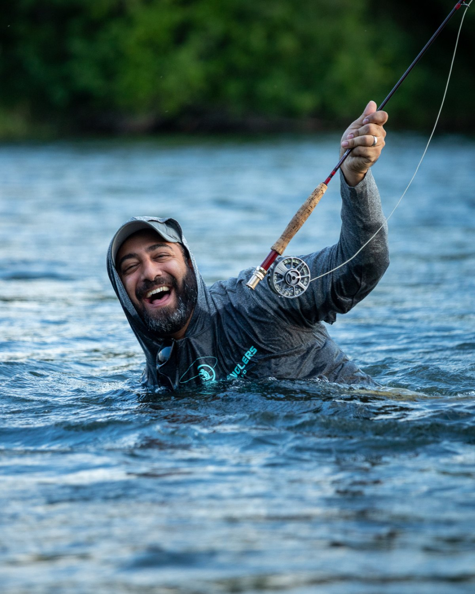
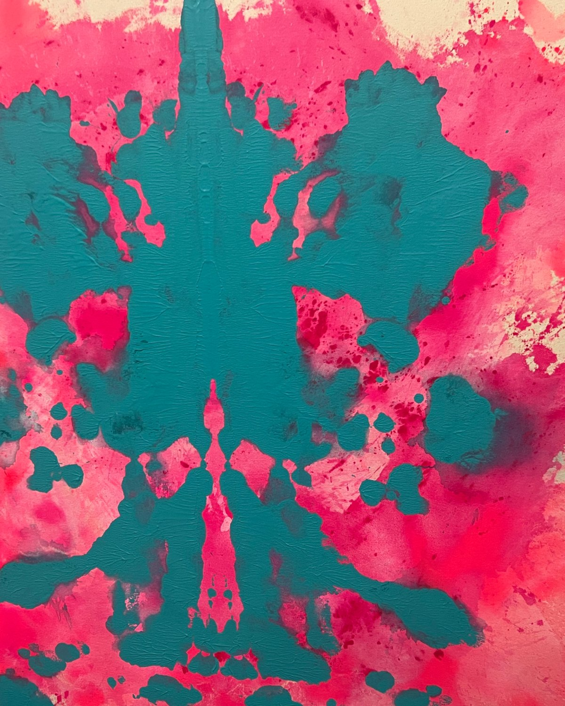
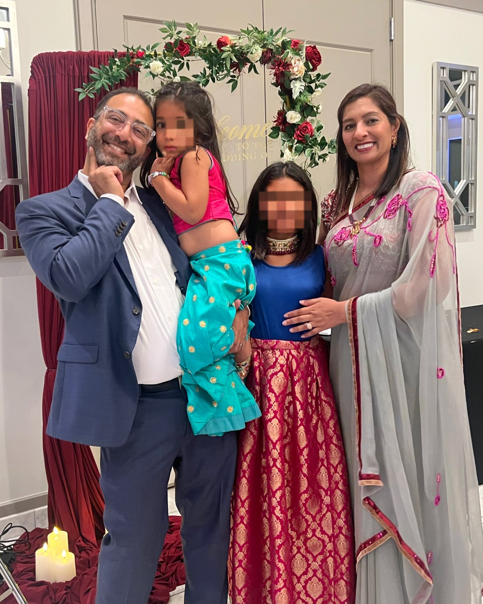
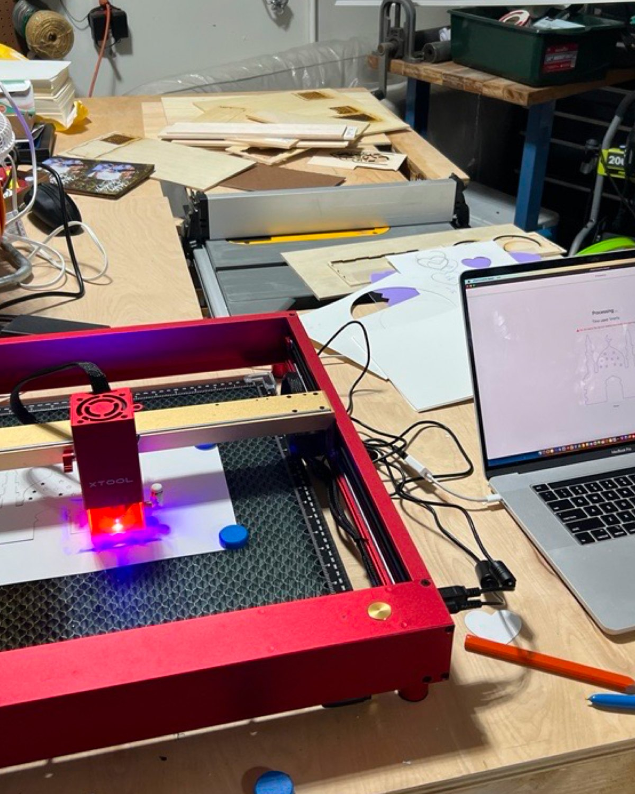

Fifteen years across creative direction, product and UX leadership, and hands-on AI-native building. The through-line has stayed the same. I walk into fragmented environments: legacy platforms, acquired systems, teams built from zero, and architect the way forward through human-centered design, AI, and systems thinking.

As a player-coach I set the design vision and the metrics design maps to, grow multidisciplinary teams and the next generation of leaders, and stay close enough to the craft to ship alongside them.
I set direction and still do the work: standing up teams, research practices, and design systems, while prototyping and testing alongside the team.
I partner across the table, not from a silo. Design maps to outcomes: task success, time-to-value, adoption.
I bring AI into the work where it genuinely helps a person in the moment: a framework to design against, not features bolted on.
Not every company needs a full design team yet. I read where an org actually is and build to that: AI-assisted, a fractional lead, or a full function, so you invest in design exactly when it starts to pay off.
I designed and shipped Cubby, a caregiver-curated, accessibility-first iOS app for teens and adults with autism and IDD, solo and end to end on an AI-assisted stack. Proof that an AI-fluent design leader can still take something from concept to a working product.
I came up as a visual person and I never left it. I'm a working artist, and I believe people should see what they want in a piece. An artist shouldn't dictate how it's interpreted. I'm a tinkerer by nature; I build things to understand them. My taste comes from outside the screen too: architecture, industrial design, and fashion are constant inputs. And I give a lot of it back: portfolio reviews, mentorship, and career coaching. At home, the smallest member of the family is very much the boss.


